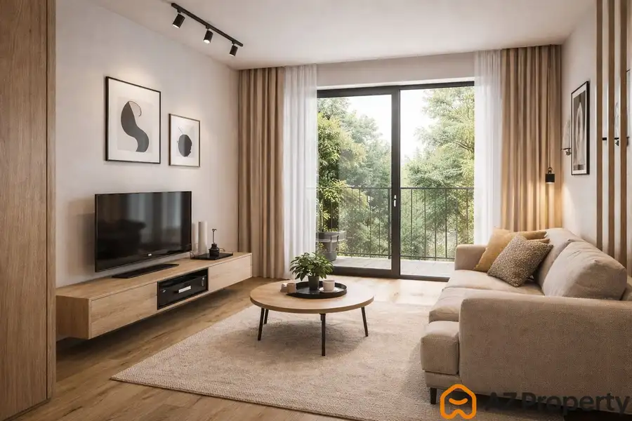
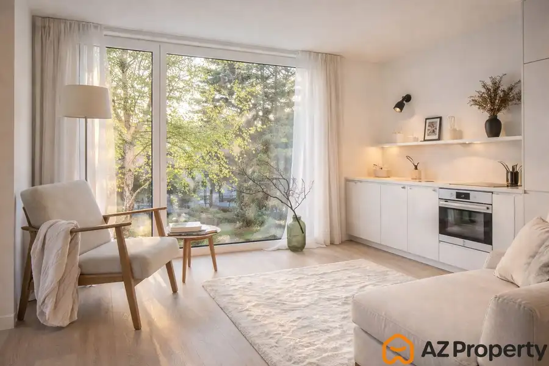
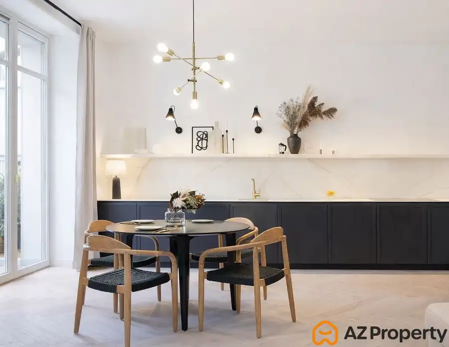
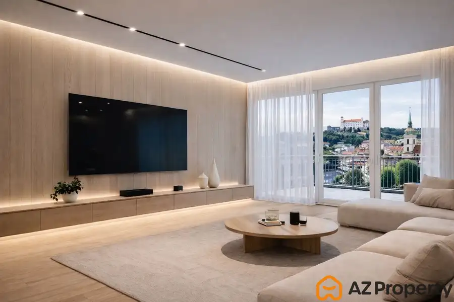

Predaj · Byt
AZ PROPERTY* pre konkrétneho klienta hľadáme 2-izbový byt v Starom meste
Staré Mesto, Bratislava
250 000 €5 000 € za m²

- Dispozícia2-izbový
- Plocha50 m²
- Poschodie2. z 8
- StavČiastočná rekonštrukcia
O nehnuteľnosti
AZ PROPERTY* pre konkrétneho klienta hľadáme 2-izbový byt v Starom meste Pre nášho klienta aktívne hľadáme 2-izbový byt v Bratislave, ideálne v mestskej časti Staré Mesto. Preferovaná cena závisí od stavu nehnuteľnosti. Klient má zabezpečené financovanie z vlastných zdrojov, čo umožňuje rýchly a flexibilný priebeh kúpy. Cena od 250.000,- Eur - 290.000,- Eur V prípade, že disponujete vhodnou ponukou alebo zvažujete predaj svojej nehnuteľnosti, neváhajte nás kontaktovať: 0903 853 325zornanova@azproperty.sk Za všetky ponuky vopred ďakujeme.
Parametre
- Cena vrátane energií
- Nie
- Druh
- 2 izbový byt
- Dátum zverejnenia
- 02. 04. 2026
- Energetický certifikát budovy
- nie je
- Podlažie
- 2
- Počet nadzemných podlaží
- 8
- Rok výstavby
- 1960
- Stav nehnuteľnosti
- Čiastočná rekonštrukcia
- Typ
- Predaj
- Typ konštrukcie
- Tehlová
- Úžitková plocha
- 50 m²
Kde to je


Ďalšie ponuky
Celá ponukaMohlo by Vás zaujímať

BytNové 150 000 €AZ PROPERTY* pre konkrétneho klienta hľadáme 1-izbový byt v mestskej časti Ružinov Ružinov, Bratislava 1-izbový35 m²2. podlažie
BytNové 190 000 €AZ PROPERTY* pre konkrétneho klienta hľadáme 2-izbový byt v mestskej časti Ružinov Ružinov, Bratislava 2-izbový50 m²2. podlažie
BytNové 390 000 €AZ PROPERTY* pre konkrétneho klienta hľadáme 4-izbový byt v Starom meste Staré Mesto, Bratislava 4-izbový80 m²3. podlažie